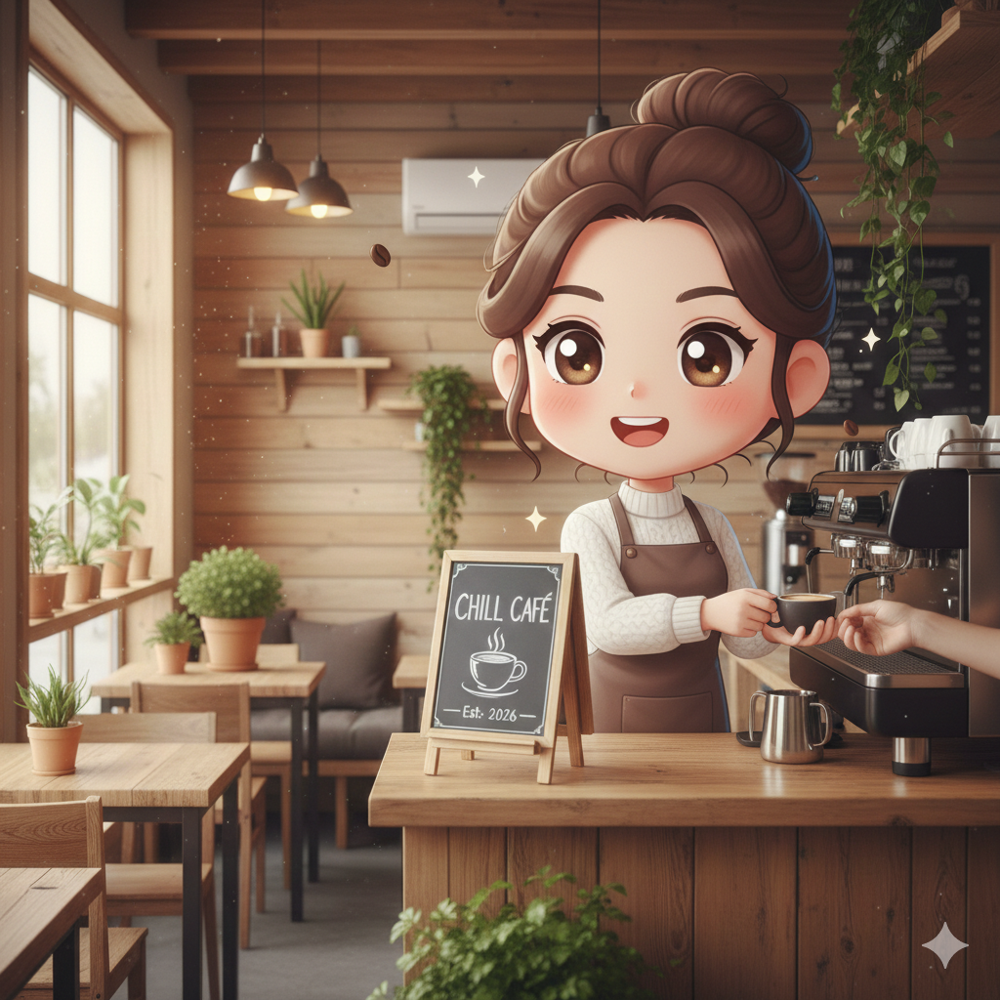

Mình định hướng trở thành doanh nhân, cụ thể là chủ tiệm cà phê, vì mong muốn xây dựng một mô hình kinh doanh sáng tạo, bền vững và mang lại giá trị cho cộng đồng. Mình yêu thích không gian cà phê vì đó là nơi mọi người có thể thư giãn, học tập, làm việc và kết nối cảm xúc.
Việc sở hữu và điều hành một quán cà phê giúp mình phát triển kỹ năng quản lý, giao tiếp và tư duy kinh doanh. Đây cũng là con đường phù hợp với mục tiêu trở thành một doanh nhân độc lập và tự chủ.
